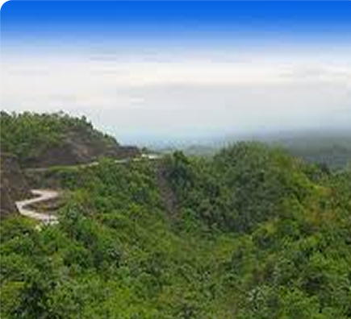
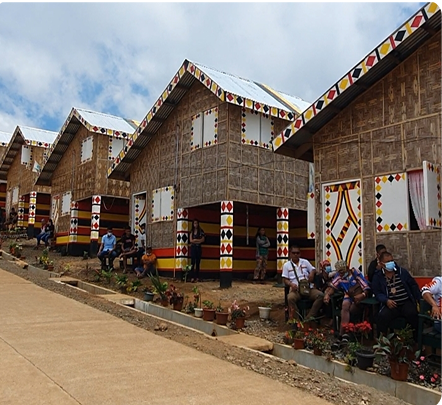
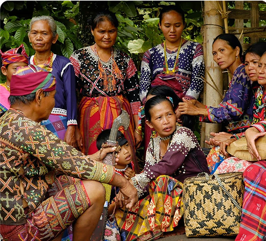
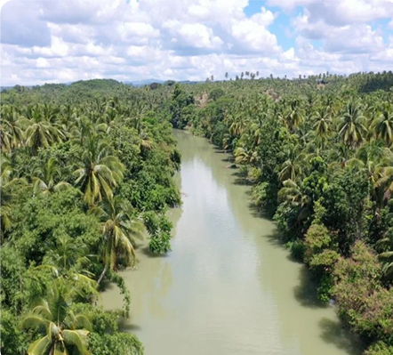

MUNICIPALITY OF ASUNCION
Asuncion, a progressive agricultural town in Davao del Norte, is known for its vast farmlands, rich indigenous heritage, and growing commercial sector. With a strategic location along major trade routes, the municipality serves as a vital center for rice, banana, and coconut farming, supplying produce to both local and international markets. Beyond its economic strength, Asuncion offers a peaceful rural lifestyle, cultural diversity, and natural attractions, making it a vital player in Mindanao’s agricultural industry.

Geography & Area
Rolling Plains and Fertile Valleys
Asuncion spans 548 square kilometers, featuring lush farmlands, river basins, and gently sloping hills. The municipality is nourished by tributaries of the Tagum-Libuganon River, making it an ideal location for large-scale farming, fisheries, and agri-business ventures.

Brief History
From Indigenous Settlements to a Thriving Agricultural Town
Asuncion was originally inhabited by indigenous groups such as the Mandaya, Manobo, and Ata, who thrived on hunting, fishing, and farming. With the arrival of Visayan migrants, the town expanded its agricultural operations and became a major contributor to Davao del Norte’s economy. Over the years, Asuncion has grown into a modern rural hub, balancing agriculture, trade, and cultural preservation.

Demographics & Language
A Multicultural Community Built on Agriculture
Asuncion’s population is a mix of Cebuano (Bisaya) speakers, indigenous Manobo and Mandaya tribes, and settlers from Luzon and the Visayas. Tagalog and English are widely spoken in schools, businesses, and government offices, ensuring accessibility for visitors, investors, and traders.

Climate & Environment
A Land of Agricultural Abundance
Asuncion enjoys a tropical rainforest climate, with moderate-to-high rainfall year-round, ensuring consistent crop production. The local government promotes sustainable farming practices, reforestation projects, and river conservation initiatives, maintaining the ecological balance while supporting economic growth.
Reference: davaodelnorte-asuncion